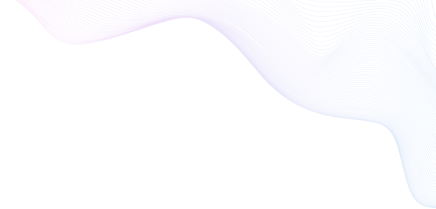

Мой опыт работы:
• 27.10.2011 - 29.04.2014 ОАО «ФСК ЕЭС» филиал Волго-Окское ПМЭС, служба информационно технологических систем (связь, передача данных).
Должность: инженер
Обязанности: техническое обслуживание оборудования связи, настройка, монтаж, проведение измерений, мониторинг работы оборудования, поддержание работоспособности.
• 01.10.2014 – 10.04.2015 ООО «Тейковское текстильное предприятие».
Должность: инженер-программист
Обязанности: реализация и поддержка функционала системы мониторинга производственной выработки(html, css, JavaScript), техническая поддержка пользователей.
• 25.05.2015 – 28.09.2022 «Центральный банк Российской Федерации Отделение Иваново».
Должность: ведущий эксперт
Обязанности: техническая поддержка пользователей, администрирование систем, обслуживание парка ПЭВМ, установка и настройка средств защиты информации, изготовление криптографических ключей и настройка соответствующих систем, написание скриптов.
• 28.09.2022 – н.в. повышение квалификации в области фронтенд разработки, фриланс.